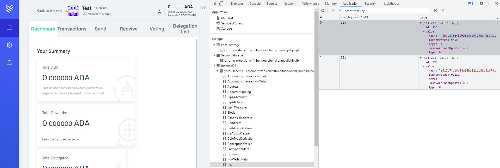
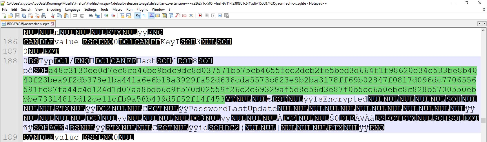
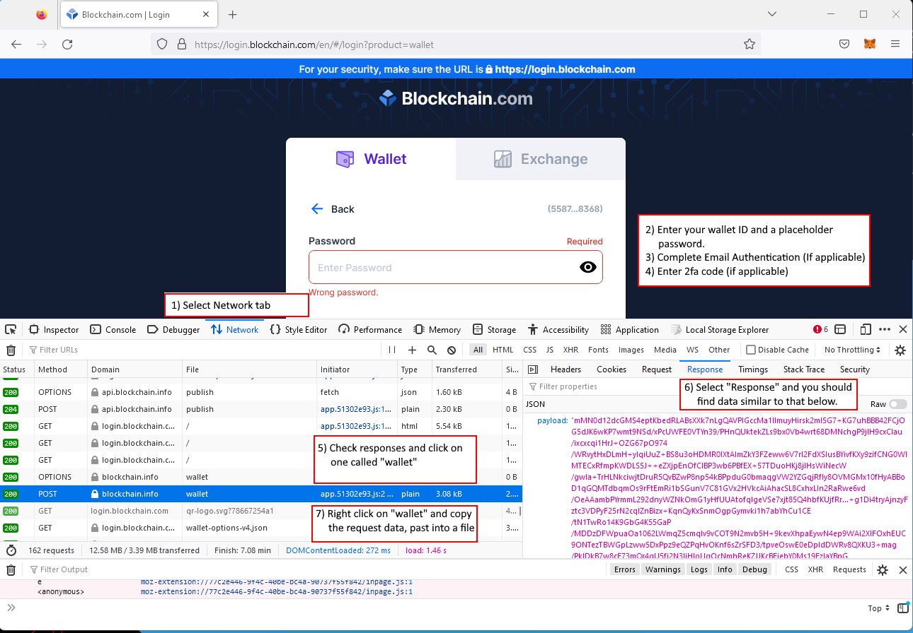
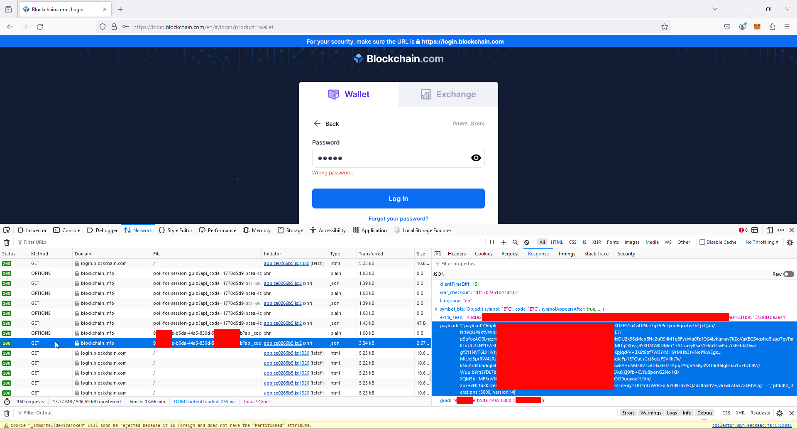
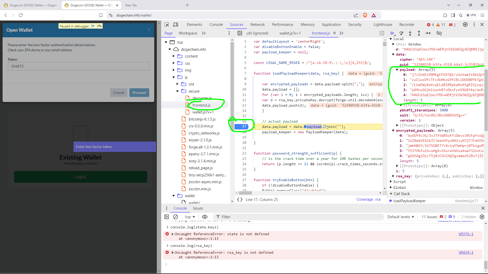
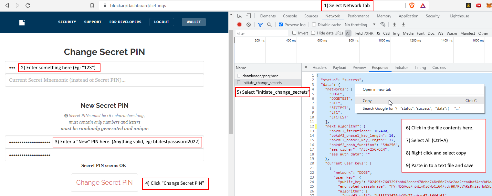

btcrecover.py Tutorial
btcrecover.py is a free and open source multithreaded wallet password recovery tool with support for Bitcoin Core, MultiBit (Classic and HD), Electrum (1.x and 2.x), mSIGNA (CoinVault), Hive for OS X, Blockchain.com (v1-v3 wallet formats, both main and second passwords), Bither, and Bitcoin & KNC Wallets for Android. It is designed for the case where you already know most of your password, but need assistance in trying different possible combinations. This tutorial will guide you through the features it has to offer.
Installation
Follow the installation guide here...
Running btcrecover.py
This tutorial is pretty long... you don't have to read the whole thing. Here are some places to start.
- If you already have a
btcrecover-tokens-auto.txtfile, skip straight to step 6. If not, and you need help creating passwords from different combinations of smaller pieces you remember, start with step 4. If you you think there's a typo in your password, or if you mostly know what your whole password is and only need to try different variations of it, read step 5. - Read The Token File section (at least the beginning), which describes how btcrecover builds up a whole password you don't remember from smaller pieces you do remember. Once you're done, you'll know how to create a
tokens.txtfile you'll need later. - Read the Typos section, which describes how btcrecover can make variations to a whole password to create different password guesses. Once you're done, you'll have a list of command-line options which will create the variations you want to test.
- If you skipped step 4 above, read the simple Passwordlist section instead.
- Read the Running btcrecover section to see how to put these pieces together and how to run btcrecover in a Command Prompt window.
- (optional) Read the Testing your config section to view the passwords that will be tested.
- (optional) If you're testing a lot of combinations that will take a long time, use the Autosave feature to safeguard against losing your progress.
- (optional, but highly recommended) Donate huge sums of Bitcoin to the donation address once your password's been found.
BIP39/44 Wallets with AddressDB
If you are recovering the passphrase from a BIP39/44 wallet, you can do so either with, or without knowing an address that you are looking for, please see Recovery with an Address Database for more info.
Token Lists and Password or Seed Lists
Both password and seed recovery methods allow the use of both a token file and a password/seed list file. For password recovery, at least one of these will be required. (And may be required for some types of seed recovery, eg: unscrambling a seed phrase)
The password/seed list file also allows the task of generating passwords, and that of testing them, to be split into two seperate steps, enabling the user to take advantages of the speed boost that PYPY offers for password generation, the increased speed of testing in cpython, while also making it trivial to split the task of testing a large number of passphrase across multiple servers. (Or doing single threaded operation of creating a password list seperately to the task of testing it on a more powerful/expensive system)
Both the password list file and the token file have their own documentation below...
Typos
btcrecover can generate different variations of passwords to find typos or mistakes you may have inadvertently made while typing a password in or writing one down. This feature is enabled by including one or more command-line options when you run btcrecover.
If you'd just like some specific examples of command-line options you can add, please see the Typos Quick Start Guide.
With the --typos # command-line option (with # replaced with a count of typos), you tell btcrecover up to how many typos you’d like it to add to each password (that has been either generated from a token file or taken from a passwordlist as described above). You must also specify the types of typos you’d like it to generate, and it goes through all possible combinations for you (including the no-typos-present possibility). Here is a summary of the basic types of typos along with the command-line options which enable each:
--typos-capslock- tries the whole password with caps lock turned on--typos-swap- swaps two adjacent characters--typos-repeat- repeats (doubles) a character--typos-delete- deletes a character--typos-case- changes the case (upper/lower) of a single letter
For example, with --typos 2 --typos-capslock --typos-repeat options specified on the command line, all combinations containing up to two typos will be tried, e.g. Cairo (no typos), cAIRO (one typo: caps lock), CCairoo (two typos: both repeats), and cAIROO (two typos: one of each type) will be tried. Adding lots of typo types to the command line can significantly increase the number of combinations, and increasing the --typos count can be even more dramatic, so it’s best to tread lightly when using this feature unless you have a small token file or passwordlist.
Here are some additional types of typos that require a bit more explanation:
-
--typos-closecase- Like--typos-case, but it only tries changing the case of a letter if that letter is next to another letter with a different case, or if it's at the beginning or the end. This produces fewer combinations to try so it will run faster, and it will still catch the more likely instances of someone holding down shift for too long or for not long enough. -
--typos-replace s- This tries replacing each single character with the specified string (in the example, ans). The string can be a single character, or some longer string (in which case each single character is replaced by the entire string), or even a string with one or more expanding wildcards in it. For example,--typos 1 --typos-replace %awould try replacing each character (one at a time) with a lower-case letter, working through all possible combinations. Using wildcards can drastically increase the total number of combinations. -
--typos-insert s- Just like--typos-replace, but instead of replacing a character, this tries inserting a single copy of the string (or the wildcard substitutions) in between each pair of characters, as well as at the beginning and the end.Even when
--typosis greater than 1,--typos-insertwill not normally try inserting multiple copies of the string at the same position. For example, with--typos 2 --typos-insert Zspecified, guesses such asCaiZroandCZairoZare tried, butCaiZZrois not. You can change this by using--max-adjacent-inserts #with a number greater than 1.
Typos Map
-
--typos-map typos.txt- This is a relatively complicated, but also flexible type of typo. It tries replacing certain specific characters with certain other specific characters, using a separate file (in this example, namedtypos.txt) to spell out the details. For example, if you know that you often make mistakes with punctuation, you could create a typos-map file which has these two lines in it:. ,/; ; [‘/.In this example, btcrecover will try replacing each
.with one of the three punctuation marks which follow the spaces on the same line, and it will try replacing each;with one of the four punctuation marks which follow it.This feature can be used for more than just typos. If for example you’re a fan of “1337” (leet) speak in your passwords, you could create a typos-map along these lines:
aA @ sS $5 oO 0This would try replacing instances of
aorAwith@, instances ofsorSwith either a$or a5, etc., up to the maximum number of typos specified with the--typos #option. For example, if the token file contained the tokenPasswords, and if you specified--typos 3,P@55wordsandPa$sword5would both be tried because they each have three or fewer typos/replacements, butP@$$w0rd5with its 5 typos would not be tried.The btcrecover package includes a few typos-map example files in the
typosdirectory. You can read more about them in the Typos Quick Start Guide.
Max Typos by Type
As described above, the --typos # command-line option limits the total number of typos, regardless of type, that will ever be applied to a single guess. You can also set limits which are only applied to specific types of typos. For each of the --typos-xxxx command-line options above there is a corresponding --max-typos-xxxx # option.
For example, with --typos 3 --typos-delete --typos-insert %a --max-typos-insert 1, up to three typos will be tried. All of them could be delete typos, but at most only one will ever be an insert typo (which would insert a single lowercase letter in this case). This is particularly useful when --typos-insert and --typos-replace are used with wildcards as in this example, because it can greatly decrease the total number of combinations that need to be tried, turning a total number that would take far too long to test into one that is much more reasonable.
Typos Gory Details
The intent of the typos features is to only apply at most one typo at a time to any single character, even when applying multiple typos to a single password guess. For example, when specifying --typos 2 --typo-case --typo-repeat, each password guess can have up to two typos applied (so two case changes, or two repeated characters, or one case change plus one repeated character, at most). No single character in a guess will have more than one typo applied to it in a single guess, e.g. a single character will never be both repeated and case-changed at the same time.
There are however some exceptions to this one-typo-per-character rule-- one intentional, and one due to limitations in the software.
The --typos-capslock typo simulates leaving the caps lock turned on during a guess. It can affect all the letters in a password at once even though it's a single typo. As in exception to the one-typo-per-character rule, a single letter can be affected by a caps lock typo plus another typo at the same time.
The --typos-swap typo also ignores the one-typo-per-character rule. Two adjacent characters can be swapped (which counts as one typo) and then a second typo can be applied to one (or both) of the swapped characters. This is more a software limitation than a design choice, but it's unlikely to change. You are however guaranteed that a single character will never be swapped more than once per guess.
Finally it should be noted that wildcard substitutions (expansions and contractions) occur before typos are applied, and that typos can be applied to the results of wildcard expansions. The exact order of password creation is:
- Create a "base" password from one or more tokens, following all the token rules (mutual exclusion, anchors, etc.).
- Apply all wildcard expansions and contractions.
- Apply up to a single caps lock typo.
- Apply zero or more swap typos.
- Apply zero or more character-changing typos (these typos do follow the one-typo-per-character rule).
- Apply zero or more typo insertions (from the
typos-insertoption).
At no time will the total number of typos in a single guess be more than requested with the --typos # option (nor will it be less than the --min-typos option if it's used).
Autosave
Depending on the number of passwords which need to be tried, running btcrecover might take a very long time. If it is interrupted in the middle of testing (with Ctrl-C (see below), due to a reboot, accidentally closing the Command Prompt, or for any other reason), you might lose your progress and have to start the search over from the beginning. To safeguard against this, you can add the --autosave savefile option when you first start btcrecover. It will automatically save its progress about every 5 minutes to the file that you specify (in this case, it was named savefile – you can just make up any file name, as long as it doesn’t already exist).
If interrupted, you can restart testing by either running it with the exact same options, or by providing this option and nothing else: --restore savefile. btcrecover will then begin testing exactly where it had left off. (Note that the token file, as well as the typos-map file, if used, must still be present and must be unmodified for this to work. If they are not present or if they’ve been changed, btcrecover will refuse to start.)
The autosave feature is not currently supported with passwordlists, only with token files.
Interrupt and Continue
If you need to interrupt btcrecover in the middle of testing, you can do so with Ctrl-C (hold down the Ctrl key and press C) and it will respond with a message such this and then it will exit:
Interrupted after finishing password # 357449
If you didn't have the autosave feature enabled, you can still manually start testing where you left off. You need to start btcrecover with the exact same token file or passwordlist, typos-map file (if you were using one), and command-line options plus one extra option, --skip 357449, and it will start up right where it had left off.
Unicode Support
If your password contains any non-ASCII (non-English) characters, you will need to add the --utf8 command-line option to enable Unicode support.
Please note that all input to and output from btcrecover must be UTF-8 encoded (either with or without a Byte Order Mark, or "BOM"), so be sure to change the Encoding to UTF-8 when you save any text files. For example in Windows Notepad, the file Encoding setting is right next to the Save button in the File -> Save As... dialog.
On Windows (but usually not on Linux or OS X), you may have trouble if any of the command line options you need to use contain any non-ASCII characters. Usually, if it displays in the command prompt window correctly when you type it in, it will work correctly with btcrecover.py. If it doesn't display correctly, please read the section describing how to put command-line options inside the tokens file.
Also on Windows (but usually not on Linux or OS X), if your password is found it may not be displayed correctly in the command prompt window. Here is an example of what an incorrect output might look like:
Password found: 'btcr-????-??????'
HTML encoded: 'btcr-тест-пароль'
As you can see, the Windows command prompt was incapable of rendering some of the characters (and they were replaced with ? characters). To view the password that was found, copy and paste the HTML encoded line into a text file, and save it with a name that ends with .html instead of the usual .txt. Double-click the new .html file and it will open in your web browser to display the correct password:
HTML encoded: 'btcr-тест-пароль'
Running btcrecover
(Also see the Seed Recovery Quick Start Guide.) After you've installed all of the requirements (above) and have downloaded the latest version:
- Unzip the
btcrecover-master.zipfile, it contains a single directory named "btcrecover-master". Inside the btcrecover-master directory is the Python script (program) filebtcrecover.py. -
Make a copy of your wallet file into the directory which contains
btcrecover.py. On Windows, you can usually find your wallet file by clicking on the Start Menu, then “Run...” (or for Windows 8+ by holding down the Windows key and pressingr), and then typing in one of the following paths and clicking OK. Some wallet software allows you to create multiple wallets. Of course, you need to be sure to copy the correct wallet file.- BIP-39 passphrases - Please see the BIP-39 Passphrases section below.
- Bitcoin Core -
%appdata%\Bitcoin(it's namedwallet.dat) - Bitcoin Wallet for Android/BlackBerry, lost spending PINs - Please see the Bitcoin Wallet for Android/BlackBerry Spending PINs section below.
- Bither -
%appdata%\Bither(it's namedaddress.db) - Blockchain.com - it's usually named
wallet.aes.json; if you don't have a backup of your wallet file, you can download one by running thedownload-blockchain-wallet.pytool in theextract-scriptsdirectory if you know your wallet ID (and 2FA if enabled) - Coinomi - Please see the Finding Coinomi Wallet Files section below.
- Electrum -
%appdata%\Electrum\wallets - imToken - Please see the Finding imToken Wallet Files section below.
- Litecoin-Qt -
%appdata%\Litecoin(it's namedwallet.dat) - Metamask (And Metamask clones like Binance Chain Wallet, Ronin Wallet, etc) - Please see the Finding Metamask Wallet Files section below.
- MultiBit Classic - Please see the Finding MultiBit Classic Wallet Files section below.
- MultiBit HD -
%appdata%\MultiBitHD(it's in one of the folders here, it's namedmbhd.wallet.aes) - mSIGNA -
%homedrive%%homepath%(it's a.vaultfile)
-
If you have a
btcrecover-tokens-auto.txtfile, you're almost done. Copy it into the directory which containsbtcrecover.py, and then simply double-click thebtcrecover.pyfile, and btcrecover should begin testing passwords. (You may need to rename your wallet file if it doesn't match the file name listed insided thebtcrecover-tokens-auto.txtfile.) If you don't have abtcrecover-tokens-auto.txtfile, continue reading below. - Copy your
tokens.txtfile, or your passwordlist file if you're using one, into the directory which containsbtcrecover.py. - You will need to run
btcrecover.pywith at least two command-line options,--wallet FILEto identify the wallet file name and either--tokenlist FILEor--passwordlist FILE(the FILE is optional for--passwordlist), depending on whether you're using a Token File or Passwordlist. If you're using Typos or Autosave, please refer the sections above for additional options you'll want to add. -
Here's an example for both Windows and OS X. The details for your system will be different, for example the download location may be different, or the wallet file name may differ, so you'll need to make some changes. Any additional options are all placed at the end of the btcrecover line.
-
Windows: Open a Command Prompt window (click the Start Menu and type "command"), and type in the two lines below.
cd Downloads\btcrecover-master python btcrecover.py --wallet wallet.dat --tokenlist tokens.txt [other-options...] -
OS X: Open a terminal window (open the Launchpad and search for "terminal"), and type in the two lines below.
cd Downloads/btcrecover-master python btcrecover.py --wallet wallet.dat --tokenlist tokens.txt [other-options...]
-
After a short delay, btcrecover should begin testing passwords and will display a progress bar and an ETA as shown below. If it appears to be stuck just counting upwards with the message Counting passwords ... and no progress bar, please read the Memory limitations section. If that doesn't help, then you've probably chosen too many tokens or typos to test resulting in more combinations than your system can handle (although the --max-tokens option may be able to help).
Counting passwords ...
Done
Using 4 worker threads
439 of 7661527 [-------------------------------] 0:00:10, ETA: 2 days, 0:25:56
If one of the combinations is the correct password for the wallet, the password will eventually be displayed and btcrecover will stop running:
1298935 of 7661527 [####-----------------------] 8:12:42, ETA: 1 day, 16:13:24
Password found: 'Passwd42'
If all of the password combinations are tried, and none of them were correct for the wallet, this message will be dislayed instead:
7661527 of 7661527 [########################################] 2 days, 0:26:06,
Password search exhausted
Running btcrecover.py with the --help option will give you a summary of all of the available command-line options, most of which are described in the sections above.
Testing your config
If you'd just like to test your token file and/or chosen typos, you can use the --listpass option in place of the --wallet FILE option as demonstrated below. btcrecover will then list out all the passwords to the screen instead of actually testing them against a wallet file. This can also be useful if you have another tool which can test some other type of wallet, and is capable of taking a list of passwords to test from btcrecover. Because this option can generate so much output, you may want only use it with short token files and few typo options.
python btcrecover.py --listpass --tokenlist tokens.txt | more
The | more at the end (the | symbol is a shifted \ backslash) will introduce a pause after each screenful of passwords.
Extracting Yoroi Master Key
Chrome Based Browser Wallets
You will need to first open your Yoroi Wallet, then enable open the Developer Tools in your browser.
You then need to navigate to "Application" (Chrome), go to the "IndexedDB" section, open the "Yoroi-Schema" and navigate to the "Key" section.
You will then see a list of master keys. You probably want the first Encrypted Key, as shown below:

You can then click on the "Hash" field and select Copy. This string is what you will use with the --yoroi-master-password argument
Firefox Browser Wallets
You can find the data by accessing the .sqlite file directly for the extension.
This will be found in your browser profile folder (This location of this will vary based on your environment) for the extension. You can see an example of were this file was found for a Windows environment in the very top of the screenshot below.

You can then simply open it with a text editor and look for the string "Hash" or "isEncrypted", your encrypted Master-Password will be visible in clear text. (Highlighted in green in the screenshot above)
This string is what you will use with the --yoroi-master-password argument
Finding MultiBit Classic Wallet Files
There are two different files that btcrecover can be used wth for this type of wallet. While you can run BTCRecover with MultiBit Classic .wallet files, you are far better off using MultiBit private key backup files. These private key backup files are much faster to try passwords against (Faster by a factor of over 1,000) These key backup files are created when you first add a password to your MultiBit Classic wallet, and after that each time you add a new receiving address or change your wallet password.
These are key backups are created in thekey-backup directory that's near the wallet file.
For the default wallet that is created when MultiBit is first installed, this directory is located here:
%appdata%\MultiBit\multibit-data\key-backup
The key files have names which look like walletname-20140407200743.key. If you've created additional wallets, their key-backup directories will be located elsewhere and it's up to you to locate them. Once you have, choose the most recent .key file and copy it into the directory containing btcrecover.py for it to use.
Finding Metamask Wallet Files
For Chrome Based Browsers, you will need to locate the data folder for the browser extension. You then use the path to this wallet folder with the --wallet argument.
For Metamask this is: %localappdata%\Google\Chrome\User Data\Default\Local Extension Settings\nkbihfbeogaeaoehlefnkodbefgpgknn
For Binance Wallet Extension this is: %localappdata%\Google\Chrome\User Data\Default\Local Extension Settings\fhbohimaelbohpjbbldcngcnapndodjp
For Ronin Wallet this is: %localappdata%\Google\Chrome\User Data\Default\Local Extension Settings\fnjhmkhhmkbjkkabndcnnogagogbneec
If you are trying to recover anything other than the most recent wallet, you will need to use the extract script to list all of the possible vaults that are in the extension data.
For Firefox and iOS, you will need to retrieve your Metamask vault using the process described here: https://metamask.zendesk.com/hc/en-us/articles/360018766351-How-to-use-the-Vault-Decryptor-with-the-MetaMask-Vault-Data
For Mobile wallets (iOS and Android) the "wallet-file" that you pass BTCRecover is the file: persist-root You can find it using the process above and use it directly with BTCRecover. (No need to extract the vault data only, remove excess \ characters, etc, all this is handled automatically)
For Android devices, you will mostly need a "rooted" phone. The file you are after is: /data/data/io.metamask/files/persistStore/persist-root
You can then copy/paste the vault data (from either Firefox or an extract script) in to a text file and use that directly with the --wallet argument.
Finding Coinomi Wallet Files
Note: This only supports wallets that are protected by a password. If you selected "no password", "biometrics" or "password + biometrics" then you will also need information from your phones keystore... (Which may be impossible to retrieve)
The first step for Coinomi depends on which platform you are running it on.
For Windows users, it's simply a case of navigating to %localappdata%\Coinomi\Coinomi\wallets and you will find your wallet files.
For Android users, you will need to have a rooted phone which will allow you to access the .wallet file in the Coinomi. (It should be found in the folder data\data\com.coinomi.wallet\files\wallets) How to get root access on your particular phone is beyond the scope of this document, but be warned that some methods of rooting your phone will involve a factory reset.
If there are mulitiple wallets there and you are not sure which is the correct one, the name of each wallet can be found in clear text at the end of the file. See the test wallets included with this repository in ./btcrecover/test/test-wallets for an example)
Finding imToken Wallet Files
For Android users, you will need to have a rooted phone which will allow you to access the files.
The main wallet file is located at /data/data/im.token.app/files/wallets/identity.json
How to get root access on your particular phone is beyond the scope of this document, but be warned that some methods of rooting your phone will involve a factory reset.
For iOS users, the file that you are looking for should have the same name and be in a similar location, but you will need a Jailbroken device to be able to access it.
Downloading Blockchain.com wallet files
Downloading these kinds of wallet files id done via your browser, through the "Developer Tools" feature.
Basically you need to attempt to log in to your wallet (even with the wrong password) and save the wallet file that is downloaded as part of this process.
Once you are at the blockchain.com wallet login page, with the developer tools open in your browser, you will need to do the following steps:
1) Select the Network tab
2) Enter your Wallet ID, Enter a placeholder password (you can enter anything)
3) Approve the login via email authentication (if applicable)
4) Enter your 2fa code (if applicable) and click Log In (It will say "Wrong Password", but this is normal)
5) Select the "wallet" items
6) Select the "Response" tab
7) There are two possible ways that the wallet data may be presented. The main difference will be the filename for the response that contains the wallet payload.
It will look like this:

Or this

In both instances, what we want is the "payload"
Once you have a response that looks like wallet data, right click on the wallet item, copy it and paste it in to a file using a text editor...
Downloading Dogechain.info wallet files
Downloading these kinds of wallet files id done via your browser, through the "Developer Tools" feature.
Basically you need to attempt to log in to your wallet (even with the wrong password) and save the wallet file that is downloaded as part of this process.

Downloading block.io wallet files
Downloading these kinds of wallet files id done via your browser, through the "Developer Tools" feature.
Basically you need to log in to your wallet and then go in to the "Settings" screen, once there you can open the "Developer tools" in your browser.
1) Select the Network tab
2) Enter a placeholder PIN in the "Current PIN" field. (This can be anything, eg: "123")
3) Enter a placeholder password in the New Secret PIN field. (This can be anything, but must be valid, eg: btcrtestpassword2022)
4) Click "Change Secret PIN" (This will give an error that your Secret PIN is incorrect, but that doesn't matter...)
5) Select "Responses"
6) Select the initiate_change_secrets file.
7) Once you have a response that looks like wallet data, copy it and paste it in to a text file. This is your wallet file...

Bitcoin Wallet for Android/BlackBerry Spending PINs
Bitcoin Wallet for Android/BlackBerry has a spending PIN feature which can optionally be enabled. If you lose your spending PIN, you can use btcrecover to try to recover it.
- Open the Bitcoin Wallet app, press the menu button, and choose Safety.
- Choose Back up wallet.
- Type in a password to protect your wallet backup file, and press OK. You'll need to remember this password for later.
- Press the Archive button in the lower-right corner.
- Select a method of sharing the wallet backup file with your PC, for example you might choose Gmail or perhaps Drive.
This wallet backup file, once saved to your PC, can be used just like any other wallet file in btcrecover with one important exception: when you run btcrecover, you must add the --android-pin option. When you do, btcrecover will ask you for your backup password (from step 3), and then it will try to recover the spending PIN.
Because PINs usually just contain digits, your token file will usually just contain something like this (for PINs of up to 6 digits for example): %1,6d. (See the section on Wildcards for more details.)
Note that if you don't include the --android-pin option, btcrecover will try to recover the backup password instead.
BIP-39 Passphrases & Electrum "Extra Words"
Some BIP-39 compliant wallets offer a feature to add a "25th word", “BIP-39 passphrase” or “plausible deniability passphrase” to your seed (mnemonic) (Note that most hardware wallets also offer a PIN feature which is not supported by btcrecover.)
If you know your seed, but don't remember this passphrase, btcrecover may be able to help. You will also need to know either:
- Preferably your master public key / “xpub” (for the first account in your wallet, if it supports multiple accounts), or
- a receiving address that was generated by your wallet (in its first account), along with a good estimate of how many addresses you created before the receiving address you'd like to use.
Once you have this information, run btcrecover normally, except that instead of providing a wallet file on the command line as described above with the --wallet wallet.dat option, use the --bip39 option, e.g.:
python btcrecover.py --bip39 --tokenlist tokens.txt [other-options...]
If the address/accounts that you are trying to recover are from a BIP39/44 wallet, but for a currency other than Bitcoin, you can use the --wallet-type argument and specify any supported BIP39 wallet type that is supported by seedrecover.py. (Eg: bch, bip39, bitcoinj, dash, digibyte, dogecoin, ethereum, electrum2, groestlecoin, litecoin, monacoin, ripple, vertcoin, zilliqa) You can also attempt recovery with unsupported coins that share a derivation scheme with any of these by using the --bip32-path argument with the derivation path for that coin.
For more info see the notes on BIP39 Accounts and Altcoins
If you are unsure of both your seed AND your BIP39 passphrase, then you will need to use seedrecover.py and specify multiple BIP39 passphrases. (But be aware that this is very slow)
GPU acceleration for Bitcoin Core and Litecoin-Qt wallets
btcrecover includes experimental support for using one or more graphics cards or dedicated accelerator cards to increase search performance. This can offer on the order of 100x better performance with Bitcoin Unlimited/Classic/XT/Core or Litecoin-Qt wallets when enabled and correctly tuned.
For more information, please see the GPU Acceleration Guide.
command-line options inside the tokens file
If you'd prefer, you can also place command-line options directly inside the tokens.txt file. In order to do this, the very first line of the tokens file must begin with exactly #--, and the rest of this line (and only this line) is interpreted as additional command-line options. For example, here's a tokens file which enables autosave, pause-before-exit, and one type of typo:
#--autosave progress.sav --pause --typos 1 --typos-case
Cairo
Beetlejuice Betelgeuse
Hotel_california
btcrecover-tokens-auto.txt
Normally, when you run btcrecover it expects you to run it with at least a few options, such as the location of the tokens file and of the wallet file. If you run it without specifying --tokenlist or --passwordlist, it will check to see if there is a file named btcrecover-tokens-auto.txt in the current directory, and if found it will use that for the tokenlist. Because you can specify options inside the tokenlist file if you'd prefer (see above), this allows you to run btcrecover without using the command line at all. You may want to consider using the --pause option to prevent a Command Prompt window from immediately closing once it's done running if you decide to run it this way.
Limitations & Caveats
Beta Software
Although this software is unlikely to harm any wallet files, you are strongly encouraged to only run it with copies of your wallets. In particular, this software is distributed WITHOUT ANY WARRANTY; please see the accompanying GPLv2 licensing terms for more details.
Because this software is beta software, and also because it interacts with other beta software, it’s entirely possible that it may fail to find a password which it’s been correctly configure by you to find.
Additional Limitations & Caveats
Please see the separate Limitations and Caveats documentation for additional details on these topics:
- Delimiters, Spaces, and Special Symbols in Passwords
- Memory & CPU Usage
- Security Issues
- Typos Details
Copyright and License
btcrecover -- Bitcoin wallet password and seed recovery tool
Copyright (C) 2014-2017 Christopher Gurnee
This program is free software: you can redistribute it and/or modify it under the terms of the GNU General Public License as published by the Free Software Foundation; either version 2 of the License, or (at your option) any later version.
This program is distributed in the hope that it will be useful, but WITHOUT ANY WARRANTY; without even the implied warranty of MERCHANTABILITY or FITNESS FOR A PARTICULAR PURPOSE. See the GNU General Public License for more details.
You should have received a copy of the GNU General Public License along with this program. If not, see http://www.gnu.org/licenses/